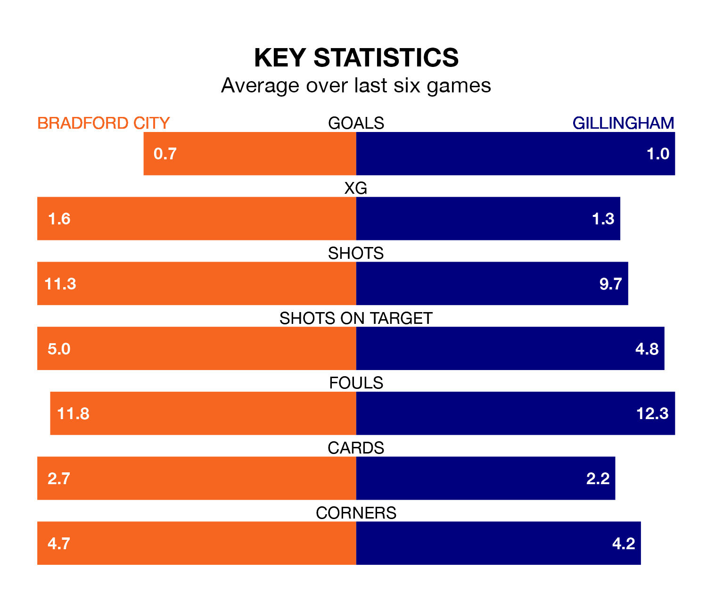

Bradford City are on a poor run ahead of hosting Gillingham at the University of Bradford Stadium on Saturday, with just four points collected from their last six games.
The Bantams have picked up one win and one draw in their last six EFL League Two games, and face a Gills side whose last six games have brought one win and three draws.
In the last 10 years, Bradford and Gillingham have played each other on 13 occasions. They won four each, and they drew five times.
On average, the Bantams scored 1.1 goals and the Gills 1.3 in those matches.
Their last meeting was on December 16, when Bradford won 2-0 away.
Gillingham are ninth in the table after 42 games, of which they have won 17 and drawn nine, earning 60 points.
Bradford are six places behind the Gills in 15th, with 14 wins and 12 draws putting them on 54 points.
With 40 goals in 42 games so far this season, the away team are the league's lowest scorers with 1.0 goals per game. But they are conceding fewer than average too, letting in 52 goals at a rate of 1.2 per game.
City are also below average scorers, with 1.2 goals per game, compared to a league average of 1.5. They have conceded 1.3 goals per game.
Bradford's last match was on Monday, a 1-1 draw against Grimsby Town, with Richard Smallwood getting the goal for the Bantams.
Gillingham lost 5-1 against Harrogate Town last time out, also on Monday, with George Lapslie on the scoresheet.
Updated: 16:41 (UTC), 04/04/24